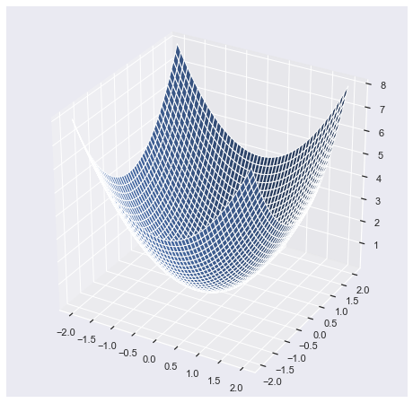
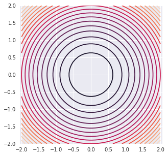
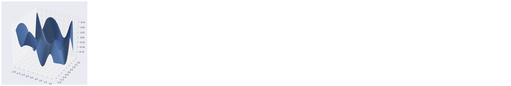
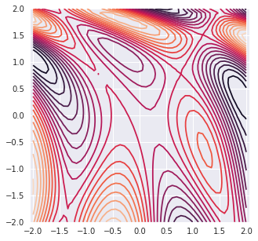
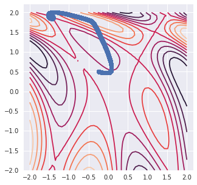
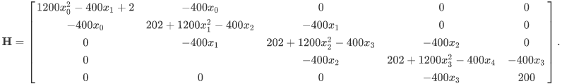

Scipy Optimization Source
SciPy optimize provides functions for minimizing (or maximizing) objective functions, possibly subject to constraints. It includes solvers for nonlinear problems (with support for both local and global optimization algorithms), linear programing, constrained and nonlinear least-squares, root finding and curve fitting.
- Scalar Functions Optimization
- Local (Multivariate) Optimization
- Global Optimization
- Least-squares and Curve Fitting
- Root finding
Gradient Descient
import numpy as np import numpy.linalg as la import scipy.optimize as sopt import matplotlib.pyplot as pt from mpl_toolkits.mplot3d import axes3d %matplotlib inline import seaborn as sns sns.set()
Spherical Surface : $$F(x,y) = x^{2} + y^{2}$$
def sphere(x): return x[0]**2 + x[1]**2 def df_sphere(x): return np.array([2.0*x[0], 2.0*x[1]])
Plot Surfaces
- Sphere
fig = pt.figure(figsize = [8,8]) ax = fig.gca(projection="3d") xmesh, ymesh = np.mgrid[-2:2:50j,-2:2:50j] fmesh = sphere(np.array([xmesh, ymesh])) ax.plot_surface(xmesh, ymesh, fmesh)
<mpl_toolkits.mplot3d.art3d.Poly3DCollection at 0x1a18961550>

Plot Concors
pt.figure( figsize = [5,5]) pt.axis("equal") pt.contour(xmesh, ymesh, fmesh,20)
<matplotlib.contour.QuadContourSet at 0x7f0bfe84f7b8>

Find Minimum
guesses = [np.array([2,2])] for i in range(10000): x = guesses[-1] s = -df_sphere(x) alpha = 0.001 next_guess = x + alpha * s guesses.append(next_guess)
guesses[0:10]
[array([2, 2]), array([1.996, 1.996]), array([1.992008, 1.992008]), array([1.98802398, 1.98802398]), array([1.98404794, 1.98404794]), array([1.98007984, 1.98007984]), array([1.97611968, 1.97611968]), array([1.97216744, 1.97216744]), array([1.96822311, 1.96822311]), array([1.96428666, 1.96428666])]
pt.figure( figsize = [5,5]) pt.axis("equal") pt.contour(xmesh, ymesh, fmesh, 10) it_array = np.array(guesses) pt.plot(it_array.T[0], it_array.T[1], "o")
[<matplotlib.lines.Line2D at 0x7f0bfea38828>]

Abritrary Surface source

def surface(x): return np.sin(0.5*x[0]**2 -0.25*x[1]**2 + 3)*np.cos(2.0*x[0] + 1.0 + np.exp(x[1])) def df_surface(x): u = np.sin(0.5*x[0]**2 -0.25*x[1]**2 + 3) u_x = np.cos(0.5*x[0]**2 -0.25*x[1]**2 + 3)*x[0] u_y = -np.cos(0.5*x[0]**2 -0.25*x[1]**2 + 3)*0.5*x[1] v = np.cos(2.0*x[0] + 1.0 + np.exp(x[1])) v_x = -np.sin(2.0*x[0] + 1.0 + np.exp(x[1]))*2.0 v_y = np.sin(2.0*x[0] + 1.0 + np.exp(x[1]))*np.exp(x[1]) df_x = u_x*v + u*v_x df_y = u_y*v + u*v_y return np.array([df_x,df_y])
Plot Surface
fig = pt.figure(figsize = [8,8]) ax = fig.gca(projection="3d") xmesh, ymesh = np.mgrid[-2:2:50j,-2:2:50j] fmesh = surface(np.array([xmesh, ymesh])) ax.plot_surface(xmesh, ymesh, fmesh)
<mpl_toolkits.mplot3d.art3d.Poly3DCollection at 0x7f0bfea68cc0>

Plot Contor
pt.figure( figsize = [5,5]) pt.axis("equal") pt.contour(xmesh, ymesh, fmesh,20)
<matplotlib.contour.QuadContourSet at 0x7f0bfeb2d390>

guesses = [np.array([-0.25,0.5])] for i in range(100000): x = guesses[-1] s = -df_surface(x) alpha = 0.0001 next_guess = x + alpha * s guesses.append(next_guess)
guesses[0:10]
[array([-0.25, 0.5 ]), array([-0.24995774, 0.4999897 ]), array([-0.24991547, 0.49997941]), array([-0.24987321, 0.49996911]), array([-0.24983095, 0.49995882]), array([-0.24978869, 0.49994853]), array([-0.24974643, 0.49993824]), array([-0.24970417, 0.49992795]), array([-0.24966191, 0.49991766]), array([-0.24961965, 0.49990738])]
pt.figure( figsize = [5,5]) pt.axis("equal") pt.contour(xmesh, ymesh, fmesh, 10) it_array = np.array(guesses) pt.plot(it_array.T[0], it_array.T[1], "o")
[<matplotlib.lines.Line2D at 0x7f0bfdcb7e80>]

Scipy Optimization
from scipy.optimize import minimize
- Sphere
x0 = [np.array([5,5])] res = minimize(sphere, x0, method='nelder-mead', options={'xtol': 1e-8, 'disp': True})
Optimization terminated successfully.
Current function value: 0.000000
Iterations: 73
Function evaluations: 137
res
final_simplex: (array([[-1.53149299e-09, 3.72359970e-09],
[-1.89733109e-09, -4.32207878e-09],
[ 5.12426026e-09, -1.63696990e-09]]), array([1.62106655e-17, 2.22802302e-17, 2.89377136e-17]))
fun: 1.6210665476880626e-17
message: 'Optimization terminated successfully.'
nfev: 137
nit: 73
status: 0
success: True
x: array([-1.53149299e-09, 3.72359970e-09])
- Surface
x0 = [np.array([-0.25,0.5])] res = minimize(surface, x0, method='nelder-mead', options={'xtol': 1e-8, 'disp': True})
Optimization terminated successfully.
Current function value: -0.380860
Iterations: 76
Function evaluations: 148
res
final_simplex: (array([[-0.36266707, 1.17858233],
[-0.36266707, 1.17858233],
[-0.36266707, 1.17858233]]), array([-0.38086004, -0.38086004, -0.38086004]))
fun: -0.3808600432413275
message: 'Optimization terminated successfully.'
nfev: 148
nit: 76
status: 0
success: True
x: array([-0.36266707, 1.17858233])
Newton's Conjugate Gradient Method
The minimum value of this function is 0 which is achieved when x =1
def rosen(x): """The Rosenbrock function""" return sum(100.0*(x[1:]-x[:-1]**2.0)**2.0 + (1-x[:-1])**2.0)
def rosen_der(x): xm = x[1:-1] xm_m1 = x[:-2] xm_p1 = x[2:] der = np.zeros_like(x) der[1:-1] = 200*(xm-xm_m1**2) - 400*(xm_p1 - xm**2)*xm - 2*(1-xm) der[0] = -400*x[0]*(x[1]-x[0]**2) - 2*(1-x[0]) der[-1] = 200*(x[-1]-x[-2]**2) return der


def rosen_hess(x): x = np.asarray(x) H = np.diag(-400*x[:-1],1) - np.diag(400*x[:-1],-1) diagonal = np.zeros_like(x) diagonal[0] = 1200*x[0]**2-400*x[1]+2 diagonal[-1] = 200 diagonal[1:-1] = 202 + 1200*x[1:-1]**2 - 400*x[2:] H = H + np.diag(diagonal) return H
x0 = np.array([1.3, 0.7, 0.8, 1.9, 1.2])
res = minimize(rosen, x0, method='Newton-CG',jac=rosen_der, hess=rosen_hess, options={'xtol': 1e-8, 'disp': True})
Optimization terminated successfully.
Current function value: 0.000000
Iterations: 24
Function evaluations: 33
Gradient evaluations: 56
Hessian evaluations: 24
res.x
array([1. , 1. , 1. , 0.99999999, 0.99999999])
References
- https://andreask.cs.illinois.edu/cs357-s15/public/demos/12-optimization/Steepest%20Descent.html
- https://scipy-lectures.org/advanced/mathematical_optimization/auto_examples/plot_gradient_descent.html
- https://docs.scipy.org/doc/scipy/reference/tutorial/optimize.html
- https://scipy-cookbook.readthedocs.io/index.html
- http://folk.ntnu.no/leifh/teaching/tkt4140/._main000.html